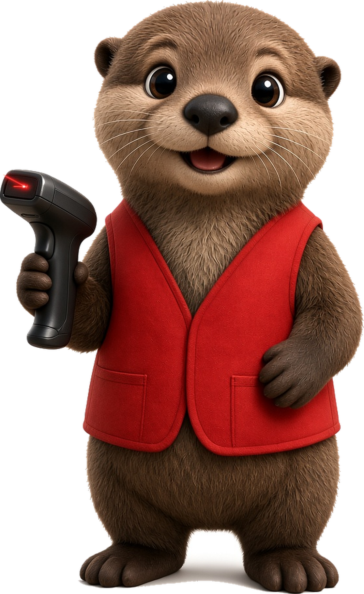
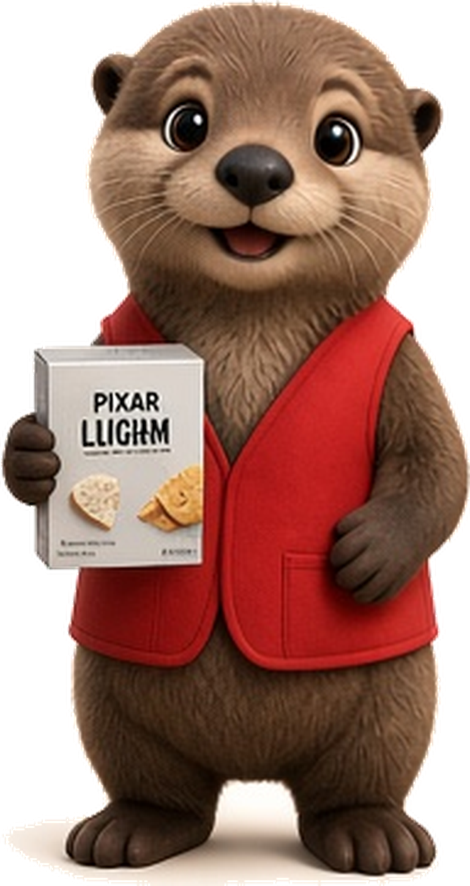

Producto de partida
Aceitunas sin hueso
Búfalo · 7501003390288
40,05
$30 · precio realSellos de excesoNOVA 3
Diplomado en Ciencia de Datos
Un catálogo heterogéneo, un motor determinista y una interfaz para comparar antes de comprar.
Paola Castañeda
3 de octubre de 2026

El problema
Varias presentaciones del mismo tipo de alimento.
Nutrientes, procesamiento, etiquetas y alérgenos viven en campos distintos.
Cada persona ordena qué quiere privilegiar.
Dieta y alergias no pueden inferirse del silencio.
La mayoría de los productos no tiene un precio observado.
Un hueco no es un cero y no es un hecho.
Comparar parecidos sin mezclar lo declarado con lo que el registro no trae.
El problema no es solo encontrar productos. Es convertir información heterogénea en una decisión comprensible.
La propuesta
Declara prioridades y, si quiere, dieta y alérgenos.
Se busca en el catálogo real, por código o por nombre.
Nutrición, procesamiento y etiquetas, solo con dato disponible.
Otras opciones de la misma categoría de referencia.
La persona se queda, sustituye o revisa las alertas.
Apoya, orienta y ayuda a decidir. No emite un diagnóstico ni declara que un alimento sea saludable para todos.
Los datos · corte del 2 de octubre de 2026
259
precios reales
12 834 sin precio observado. Cero imputados. Cero sintéticos en el archivo.
Open Food Facts, Open Prices y PROFECO.
La calidad y la disponibilidad forman parte de la decisión. Un precio de demostración en la ficha se identifica como tal y no se presenta como real.
Cobertura
Universo puntuable no es un producto recomendado. Son los que traen procesamiento y al menos cuatro percentiles. Categoría, percentiles y procesamiento se miden por separado; 5 864 es la intersección de la regla.
Motor determinista · un orden declarado
Ejemplo de prioridades: nutrición, preferencias y procesamiento. No son parámetros de un modelo entrenado.
Proporción de las etiquetas que la persona valora y el producto presenta. Si no hay etiquetas que comparar, la dimensión queda vacía.
Grupo NOVA y aditivos, cuando el registro los trae. Sin grupo, esta dimensión no se calcula.
Decisión metodológica
NutriMatch no utiliza aprendizaje supervisado porque el catálogo no contiene un target observado que permita entrenar y evaluar de manera científicamente válida un modelo de recomendación.
Evaluación · corte oficial
La misma entrada devuelve el mismo resultado, la misma banda y el mismo orden.
No es ground truth. El promedio de la dimensión nutricional baja de la A (59,68) a la E (41,57).
Experiencia · Angular
Por código, en el inicio.
Nombre, marca y categoría.
Resultado, banda y sellos.
La misma categoría de referencia.
Quedarse o sustituir.
La persona confirma.
Sellos. Informan, no diagnostican.
Plato del Buen Comer, como lo titula la pantalla.
Capturas reales: pendientes. Esta lámina no simula la interfaz. Las pantallas se muestran en la demostración en vivo.
Caso en el catálogo oficial · perfil de la interfaz
Nutrición, procesamiento y etiquetas. Sin dieta y sin alérgenos. No es una usuaria observada.
Búfalo · 7501003390288
La Cibeles · 8410344401326
La alternativa obtuvo una mayor puntuación con las preferencias y dimensiones de este perfil. No significa que sea más saludable.
Para qué sirve
NutriMatch transforma un catálogo heterogéneo de productos en información útil para tomar decisiones de compra más informadas, transparentes y personalizadas.
De encontrar productos a elegir con información.
